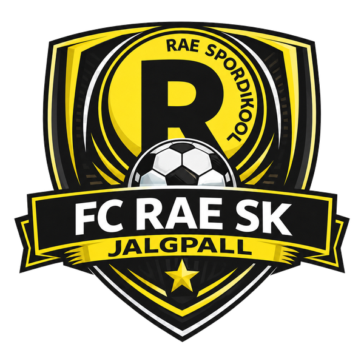

FC Rae võistkonnad
Üks klubi, mitu arenguteed.
Siit pääseb iga võistkonna alamlehele: mängijad, tulemused, kalender ja automaatselt arvutatud hooaja faktid.
Võistkonnad

FC Rae võistkonnad
Siit pääseb iga võistkonna alamlehele: mängijad, tulemused, kalender ja automaatselt arvutatud hooaja faktid.
Võistkonnad